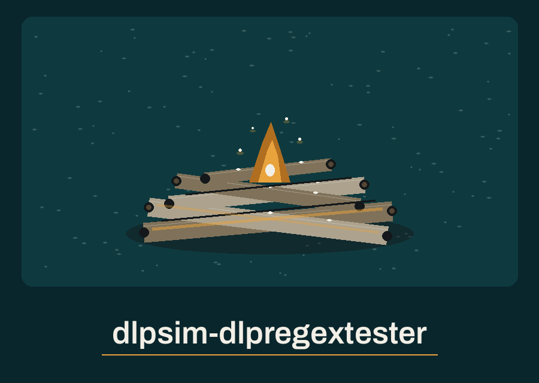

dlpsim-dlpregextester: Driftwood Bonfire Night Watch

Only Matching Lines
Masking Is Not Hiding
One Line at a Time
How a Run Ends
First plate: the scope, stated narrowly
The program receives a regular expression and a plain text file. It prints only the lines where the pattern matches. Each match inside a printed line is highlighted in bold red through ANSI colour codes. Lines without a match never appear. Nothing is generated. No detection rate is computed. No recommendation is offered. The tool tests whether one pattern selects lines in one file. It simulates no leakage scenario and measures no solution effectiveness, whatever the closing tagline of the README opening paragraph claims.
Second plate: what a run needs
Python alone, with its standard library only. The requirements file says exactly that, in one comment line, and lists no package. There is no install step beyond obtaining the code.
Third plate: install, printed and corrected
As printed in the README, the install line reads: `git clone https://github.com/ShadowStrikeHQ/dlpsim-dlpregextester`
Correction: that line points at the wrong organisation, a strike headquarters name that is not this fleet. The corrected line is: `git clone https://github.com/ShadowGuard-AI/dlpsim-dlpregextester`
The correction is labelled as a correction. Copy the corrected line, not the faulty one.
Fourth plate: the working form
The interpreter call comes first: python. Then main.py. Then a placeholder for the pattern. Then a placeholder for the sample file path. An optional redact flag may follow. In shape: python main.py PATTERN SAMPLE_FILE, with the redact flag added at the end when masking is wanted. No real pattern from any real rule set is printed here, and no real file name from any real machine is printed here.
Fifth plate: the controls in parser order
Pattern first, positional, required. File path second, positional, required. Help follows, in the short h form. Ignore case follows, in the short i form or the long form, and matching then disregards letter case. Log level follows, in the short l form or the long form, with five choices running from DEBUG through CRITICAL and INFO as the default. Redact closes the list, a long flag with no short form.
Sixth plate: highlighting and masking
Highlighting wraps each matched span in bold red ANSI codes for the terminal. Masking is separate and optional. With redact set, each matched value is altered before highlighting: a value of two characters or fewer becomes all asterisks, and a longer value keeps only its first and last characters, the middle replaced by asterisks. The rest of a printed line is not masked. Text standing beside a masked match still prints in clear. That limit stands here, beside the flag, not in a footnote.
Seventh plate: endings
After the matching lines, one summary line prints, giving the count of matches found and the number of bytes scanned, counted as the utf-8 length of the whole file text. A file holding no matches prints its matching lines as none at all, then the summary with a zero count, and the run ends at exit 0. An empty file prints a plain notice that no content was scanned, and ends at exit 1. A missing file logs an error and ends at exit 1. A pattern the regex engine rejects also ends the run at exit 1, logged as an invalid expression when its first line is tested.
Eighth plate: one line at a time
The file is split into lines and each line is tested on its own. Anchors at the start or end of a pattern therefore bind to each line, as if multiline matching were on. A pattern written to span a line break can never match, because no single test ever sees two lines together. Testers who miss this will blame the pattern, when the unit of testing is the line.
Last plate: licence
The README licence line as printed names the strike headquarters organisation as copyright holder: Copyright (c) ShadowStrikeHQ. The corrected attribution context is the fleet organisation, ShadowGuard-AI, and the fault is recorded in Defects below. Beside that line sits a separate fact about the LICENSE file itself: it carries the MIT License, and its holder line gives a pen name together with a single initial for the remaining name. The initial stays unexpanded.
Defects
Identity, counted. The install line names ShadowStrikeHQ as the organisation, and the licence line names ShadowStrikeHQ alone as copyright holder: a count of 2 for that name in the README. The count of ShadowGuard-AI in the README is 0, and the count of the unhyphenated form is 0. The README heading also restyles the repo name with capitals as dlpsim-DLPRegexTester, which matches neither the repo name nor the title used on this site. None of these faults is repaired in the preserved record below; the install correction on this site is labelled as a correction, in the open.
What the code does that the README understates. Matching runs one line at a time, so anchors behave as multiline anchors and a pattern spanning a line break can never match. Redact masks only the matched spans, while the remainder of a printed line reaches the terminal in clear. The README gives no exit behaviour, although the code separates a clean no match run at exit 0 from an empty file, a missing file, and a rejected pattern, each at exit 1. The summary counts bytes as the utf-8 length of the entire file, including lines that were never printed.
Theme entry record. The entry for this repo is complete in both theme volumes, word for word identical, and no formal completion is owed for it. Two list faults stand in the entry as printed: its element list closes with setting and crew words and a verb fragment that name no drawable thing, and an early direction set the beach fire bobbing at anchor, a motion a fire built on sand cannot perform. That motion belongs to the distant ship alone, and the fire in every picture on this site stays planted on the sand.
The preserved README record

# dlpsim-DLPRegexTester
A command-line tool that takes a regular expression and a sample text file as input, and highlights matches in the text that would trigger a DLP rule based on the regex. It is a regex highlighter only: it generates no data, computes no detection rate, and makes no recommendations. Only the lines containing matches are printed, with each matched value highlighted; lines without matches are not printed, so values the pattern does not select are not echoed. With --redact, the middle of each matched value is masked, keeping only its first and last characters. A plain summary line is printed after the text, stating the matches found and the file bytes scanned. An empty file exits 1 with a plain line; a file with no matches prints a zero matches summary and exits 0. Useful for testing and refining DLP regular expression rules. - Focused on Tools to simulate data leakage scenarios and test the effectiveness of DLP solutions.
## Install
`git clone https://github.com/ShadowStrikeHQ/dlpsim-dlpregextester`
## Usage
`python main.py "\d{3}-\d{2}-\d{4}" test.txt`
`python main.py "\d{3}-\d{2}-\d{4}" test.txt --redact`
## Parameters
- `regex`: The regular expression to test.
- `file_path`: The path to the text file to scan.
- `-h`: Show help message and exit
- `-i`, `--ignore-case`: Perform case-insensitive matching.
- `-l`, `--log-level`: Set the logging level.
- `--redact`: Mask the middle of each matched value, keeping only its first and last characters.
## License
Copyright (c) ShadowStrikeHQ